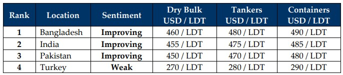

inWeekly Demolition Reports22/04/2025

The volatility of the last few weeks still seems far from settled despite the 90-day tariff pause for various countries setting in andnegotiations continuing in earnest to see just what can be bargained for or even salvaged at this point, in this increasingly fraught and unnecessary trade war bought on by Team Trump in his second term. The staggering tariffs against China have reportedly peaked to 245% from last week as President Xi takes a stronger stance against the U.S. and refuses any further negotiations with Trump, all while the EU and China make decisive gains in easing trade between the continents / nations. In the interim, even though dry markets were up for the week by 1.6%, overall, they have declined a massive 24% this month (according to Baltic Exchange Dry Index), as oil itself climbed over 3% to end the week at nearly USD 64.50/barrel, in the face of OPEC+ countries now reversing course on increasing output amidst a rampant decline in global energy demands. As protests rages across America in the hopes of a (economic) reprieve, sub-continent markets have also had to endure knock on effects of the tariffs as the standoff between China and the U.S. remains of particular concern for Indian sub-continent ship recyclers and the likelihood of excess quantities of tariff-afflicted cheaper Chinese steel resuming resales into the sub-continent markets again. Moreover, reciprocal tariffs will certainly affect locations where sub-continent markets resell their materials to and as such, until the tariff landscape is ironed out, it remains difficult to gauge what the overall impact will be on the ship recycling sector, including vessel prices moving forward.
The 90-day pause has brought some respite from what was expected to be a busy second half to the year – in terms of a supply of backlogged vintage ships for recycling sale including many 90s built bulkers and containers that have managed to over-extend their respective trading lives. Conversely, on the back of the recently firming freight markets, recycling destinations are being deprived of tonnage once again causing demand and prices to stay steady, especially as we stand before another crazy monsoon a mere 6 weeks away and local fundamentals display their respective shares of volatility. The U.S. Dollar shuffles up the week with its mixed performance against recycling nation currencies, and steel plate prices start to display unfavorable signs all over again. As such, this perhaps is as good a time for non-HKC yards to concentrate on facility upgrades, all while the authorities in Bangladesh are yet to confirm an extension beyond the original March 31st deadline for yards to have begun yard upgrades until June 26th after which, their future operations would be denied. While Pakistani recyclers still have some ways to go with their upgrades, Turkey at the far end has nearly all fundamentals decline as it resumes its journey into the abyss of despair.
Overall, as nations unite in this seemingly one-man induced economic apocalypse that is ravaging nations and global businesses alike, whatever eventually comes of it, 2025 is certainly packaging itself to offer staggering levels of economic imbalances in vessel trading and recycling spaces, especially if international governing bodies change the modus operandi of future economic trade patterns without the U.S. and the Dollar gets dethroned as the primary trading instrument. This could lead to an unprecedented collapse in security, global trade, and even the collapse of sanctions that could once again witness the resumption of USDN / OFAC tonnage being delivered at shores, all while the pledges of global security and U.S. prosperity start to lose effect. Tough year ahead!

📄 Download PDF: Ship-recycling-market-insight-Week-16-04-18-2025-Exploiting_Extensions.pdfSource: GMS,Inc.https://www.gmsinc.net/gms_new/index.php/web